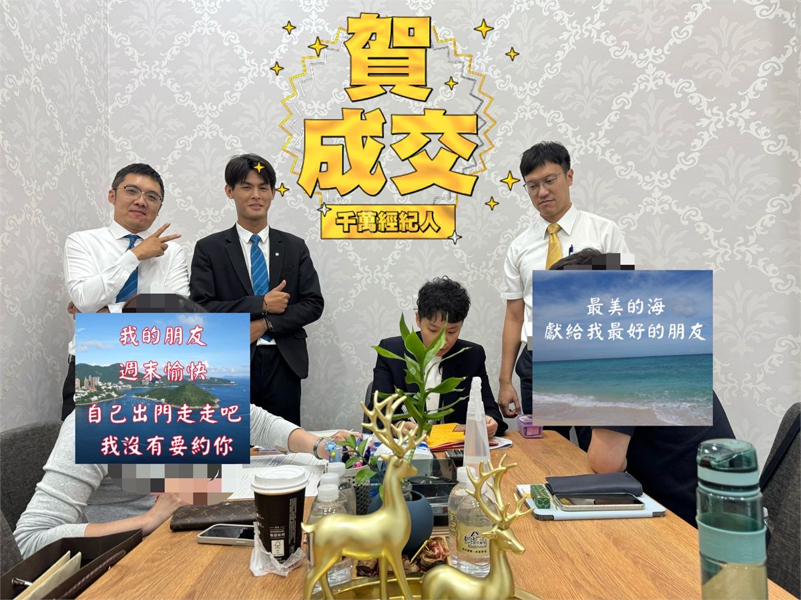
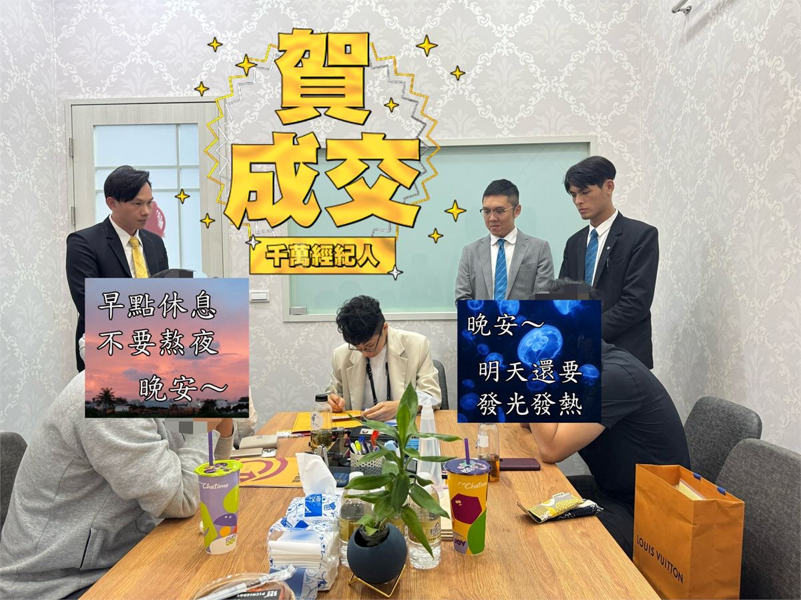
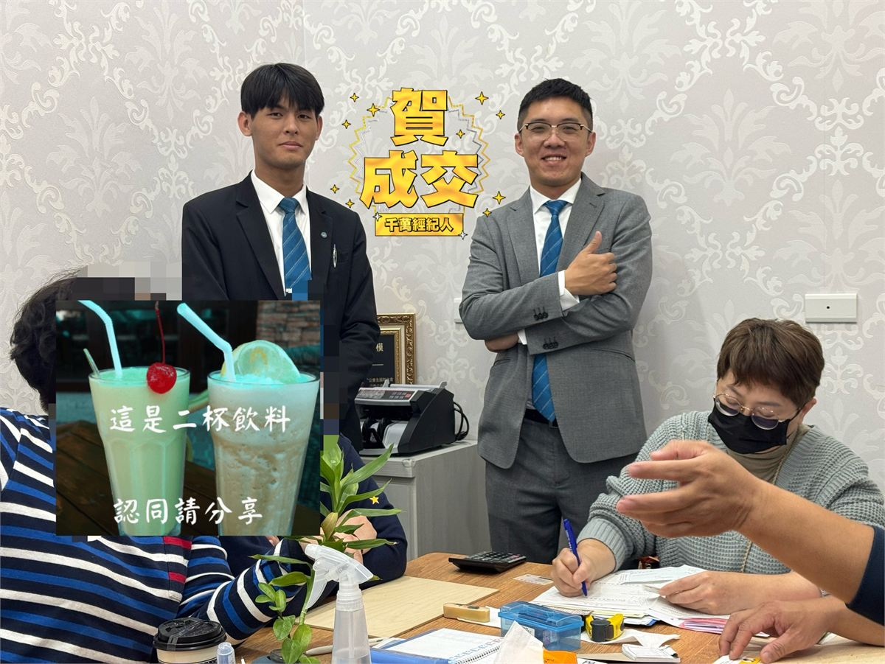
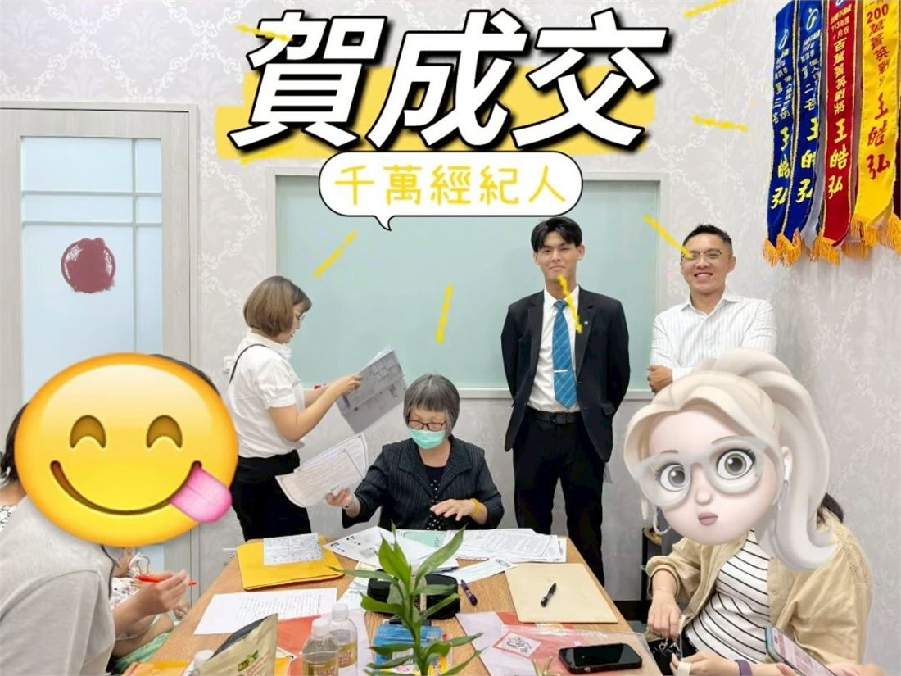
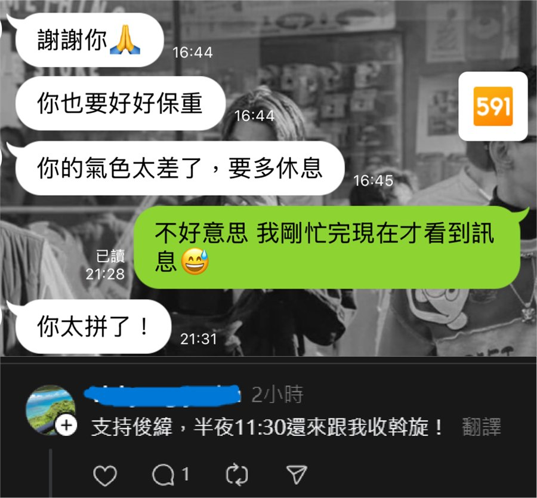
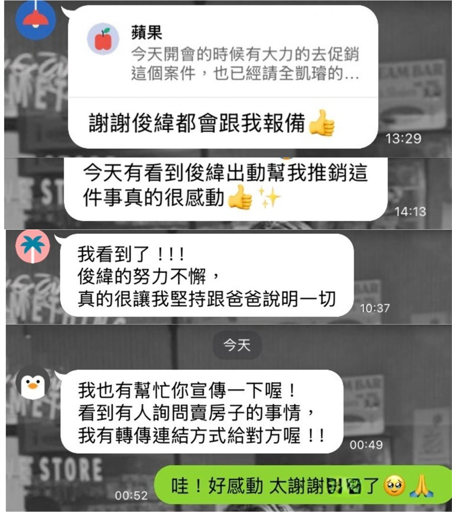
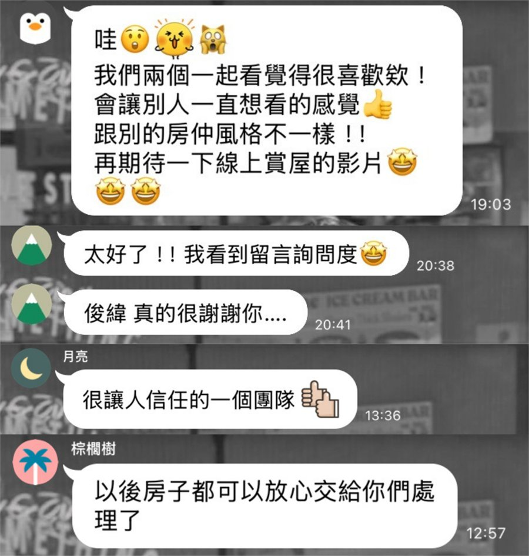
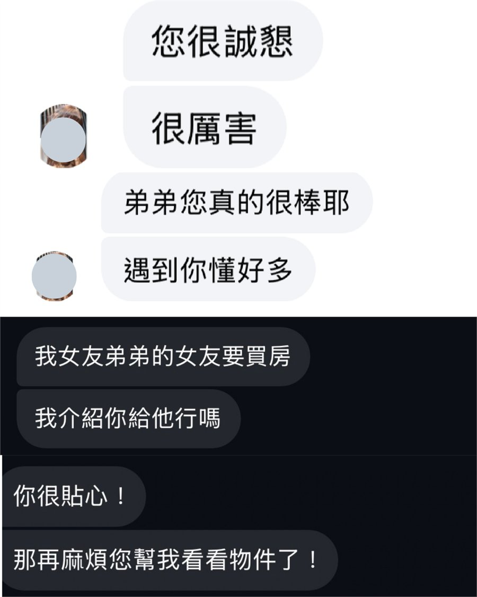

準備出售
想知道第一步
先掌握價格、流程與準備方向。

無論已經準備出售，或只是想先了解市場，都可以從現在的狀況開始討論。
先掌握價格、流程與準備方向。
帶看少、詢問少，想找出原因。
先知道市場位置與可能價格。
先了解不同做法與可行選擇。
← 左右滑動查看四種狀況 →
以下為部分成交案例。

委託至成交 14天

委託至成交 41天

委託至成交 47天

上架至成交 9天
← 左右滑動查看更多 →
加入官方 LINE，領取完整版90天快速成交策略，查看更多實際成交紀錄。
加入官方 LINE｜查看更多成交案例 →從市場定位、專業包裝，到買方曝光與回饋調整，每一步都有實際成交經驗作為依據。
透過實際成交資料與競品分析，找出物件在市場中的正確定位。
分析物件優劣勢、優化視覺包裝，並盤點現有買方資源，增加有效詢問與帶看機會。
根據市場反應持續調整，讓每一步都有依據。
← 左右滑動查看完整方法 →







← 左右滑動查看更多客戶回饋 →
加入後點選「屋主諮詢」，選擇最符合您目前狀況的1～4選項。
想知道您的房子現在怎麼賣比較有機會嗎？
歡迎加入官方 LINE，簡單告訴我您目前遇到的問題。我會透過數據分析市場行情與同區競品，並結合實際成交經驗，幫您整理出清楚、完整的銷售方向。
加入官方 LINE｜預約諮詢 →